| 移动端telegram添加测试组管理员 |
您需要安装并注册登录telegram，进行下一步操作 （如您未下载请看下方安装教程） |
| 1、在telegram主页面的左上角点击“搜索” |
| 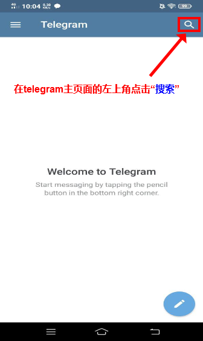 |
| 2、复制或输入“@FTQTest”到搜索栏。 |
| 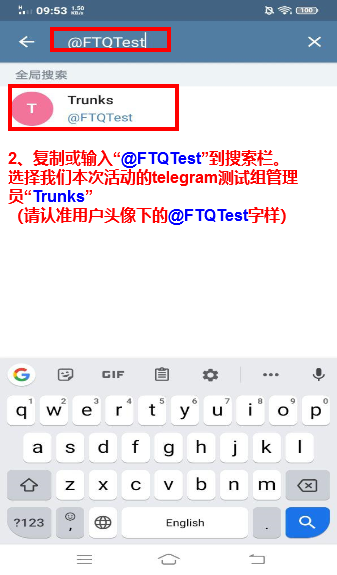 |
| 3、对话框内直接输入：“参与测试” 发送给我们的管理员即可。 |
| 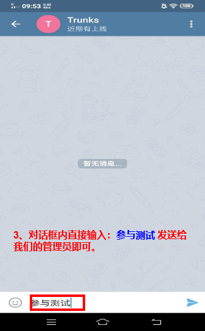 |
telegram安卓使用教程 |
|
telegram的下载：
官方网站是https://telegram.org |
| 1、点击应用图标运行 |
| 2、注册登录 |
| 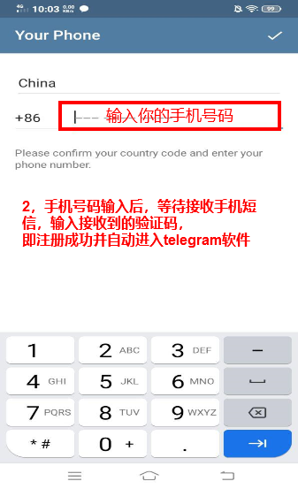 |
| 3、登录以后默认是英文版本，如下图操作可汉化 |
| 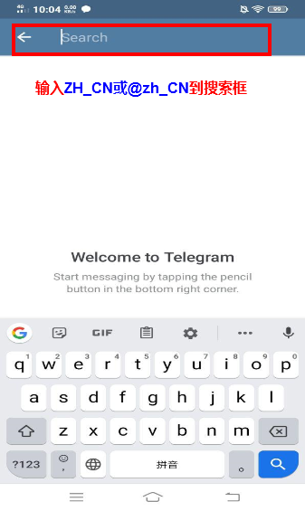 |
| 4、选择简体中文语言包 |
| 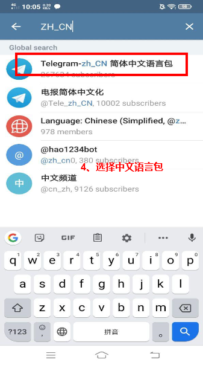 |
| 5、按装语言包 |
| 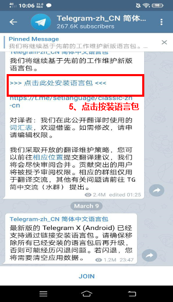 |
| 6、点击“CHANGE”后即自动更新为中文版 |
| 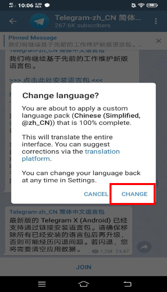 |
配置代理（无法正常连接解决方法） |
| 1、左上角菜单栏，选择“设置”，选择“数据与存储” |
| 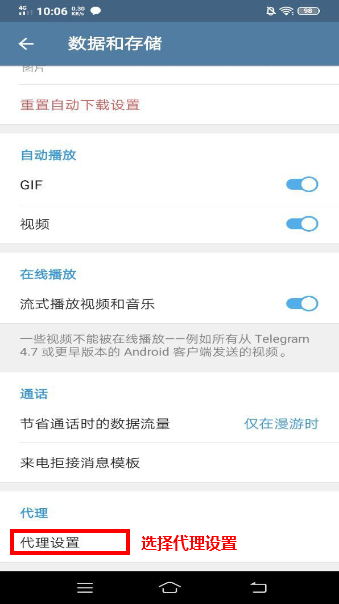 |
| 2、选择“代理链接” |
| 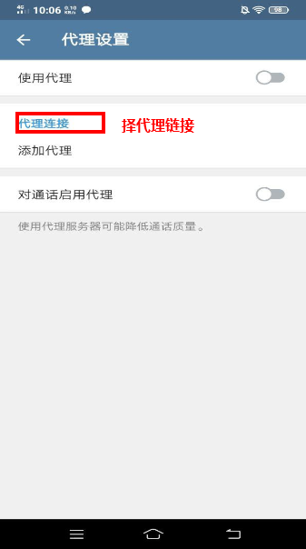 |
| 3、选择合适您的“连接类型”，输入“产品名的服务器地址” （ 备注：产品名服务器地址可以从产品名客户端左侧菜单栏里，点击设置选项看到） |
| 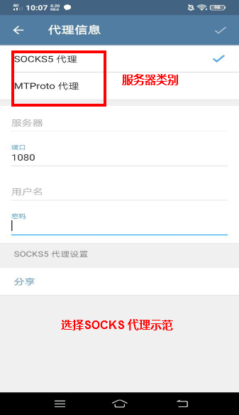 |
| 4、填写信息并保存 |
| 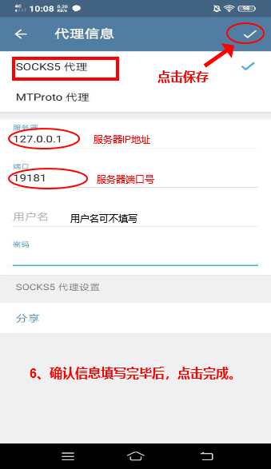 |
| 备注： 佛跳墙服务器地址可以从佛跳墙PC端左侧菜单栏里，点击设置选项看到（如发现添加代理服务器后， 能正常使用，可以在佛跳墙客户端设置选项里查询一下，代理地址是否有变更） |
| 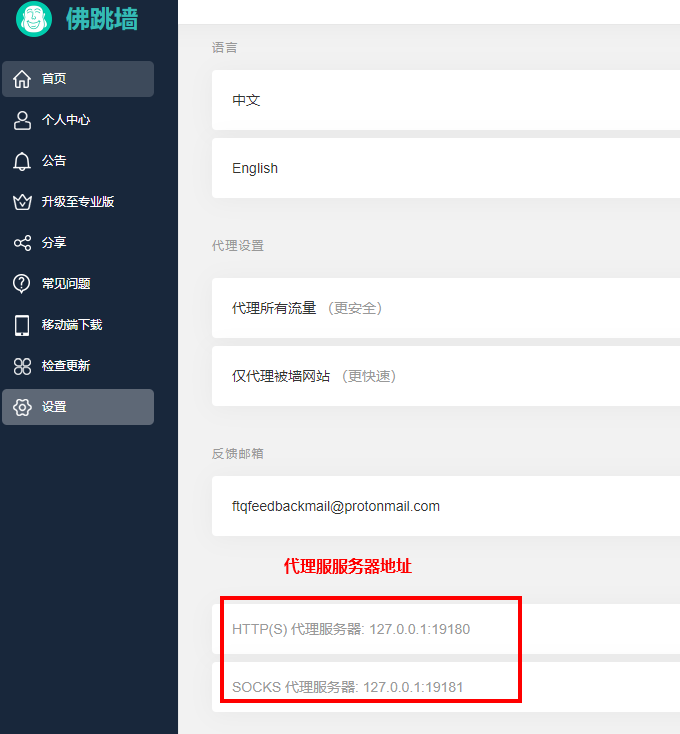 |
| 谢谢观看 |